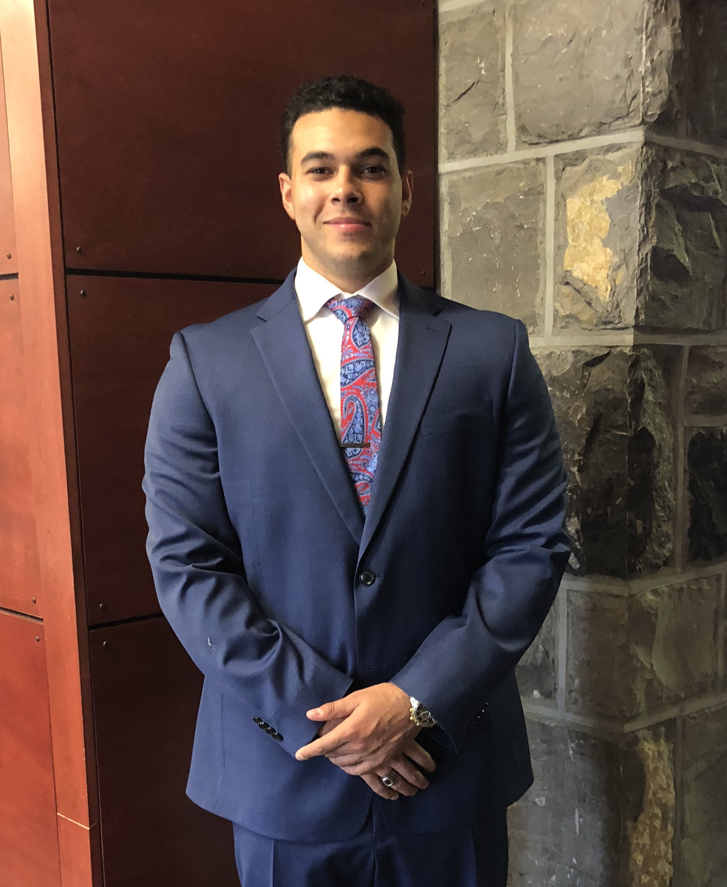

About Me
My Name is Ceaser Sheldon Perkins. I am a graduate of the Full Stack Web Development Program at UNC Charlotte. I developed utilizing the MERN stack and agile frameworks.
I am also a Virginia Tech graduate. My Concentration being GIS. Where I worked with Geodatabases and studied data analysis. I utilized Python to automate the tasks of processing, storing and visualizing data.
My objective is to use my Full Stack Web Development to work as a Backend developer. Aiding in Database Managment or utilizing javascript to power Web Applications.